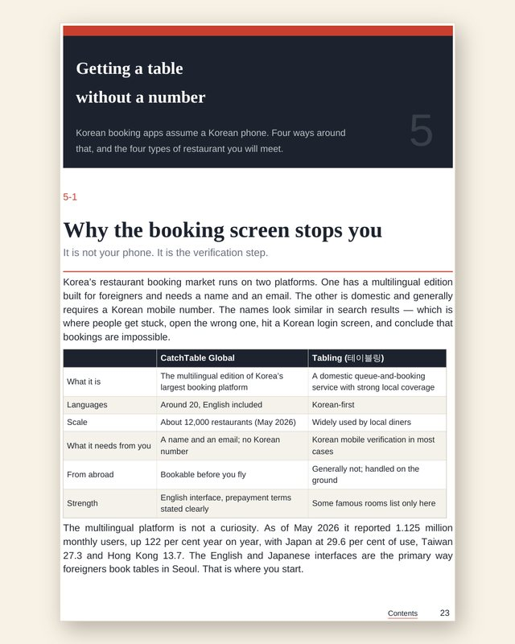
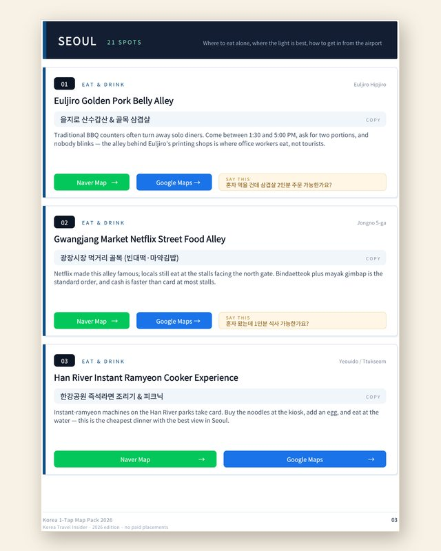

100% FREE · ONE-PAGE GUIDE · NO SIGN-UP100% 無料 · 1枚ガイド · 登録不要100% 免費 · 一頁式指南 · 免註冊100% 免费 · 一页指南 · 免注册
Download the 100% free one-page guide (PDF) 100% 無料の1枚ガイドを見る（PDF） 100% 免費下載韓國旅遊一頁式指南（PDF） 打开 100% 免费一页指南（PDF）Opens as a PDF on this site · no email, no sign-up.中身は「韓国入国・K-ETA 1枚チェック」。PDFがその場で開きます。メール・登録は不要です。免費一頁式指南 PDF 直接開啟，免信箱、免註冊。站内直接打开，无需邮箱或登录。
Also free: the 30-pin Seoul map無料のソウル30地点マップもあります還有免費的首爾 30 個地點地圖还有免费的首尔 30 处地点地图
Book hotel, flight and train — the three big costsホテル・航空券・列車 — 旅の三大支出住宿・機票・火車票 — 三大花費住宿・机票・火车票 — 三大花费
Everything on this page is free. Booking through these links costs you nothing extra — we earn a small commission only if you book.このページはすべて無料です。ここから予約しても料金は同じで、予約が入ったときだけ紹介料をいただきます。這一頁全部免費。透過這些連結預訂價格不變，只有完成預訂我們才有少量佣金。这一页全部免费。通过这些链接预订价格不变，只有预订成功我们才有少量佣金。
TRIP.COMSeoul hotelsソウルのホテル首爾住宿首尔住宿
TRIP.COMIncheon Airport → Seoul仁川空港 → ソウル仁川機場 → 首爾仁川机场 → 首尔
TRIP.COMSeoul → Busan KTXソウル → 釜山 KTX首爾 → 釜山 KTX首尔 → 釜山 KTX
TRIP.COMFlights to Korea韓国行き航空券飛韓國機票飞韩国机票
Free tools and the free one-pager stay free, no sign-up. Affiliate links: Trip.com, Klook, KKday.無料ツールと1枚ガイドはこれからも無料・登録不要。アフィリエイト：Trip.com・Klook・KKday。免費工具與一頁式指南永久免費、免註冊。聯盟連結：Trip.com・Klook・KKday。免费工具与一页指南永久免费、免注册。联盟链接：Trip.com・Klook・KKday。
Plan the essentials旅の準備に便利なチケット・通信先準備上網、機場交通與景點票券先准备上网、机场交通与景点票券
Choose the product page directly. Desktop visitors can scan the matching QR; mobile visitors can tap the buttons.商品ページを直接開きます。PCではQR、スマートフォンではボタンをご利用ください。按一下直接前往商品頁；電腦可掃描對應 QR，手機可直接點選按鈕。按钮会直接打开商品页。电脑可扫描对应二维码，手机可直接点按钮。

AREX Airport Express ticketAREX空港鉄道のチケットAREX 機場快線車票AREX 机场快线车票

N Seoul Tower Observatory ticketNソウルタワー展望台のチケットN 首爾塔觀景台門票N 首尔塔观景台门票

Affiliate links: Klook and KKday. We may earn a small commission if you book, at no extra cost to you; the price you pay is the same.アフィリエイトリンク：Klook・KKday。予約により少額の紹介料を得る場合がありますが、お客様の支払額は変わりません。聯盟連結：Klook 與 KKday。若透過連結預訂，我們可能取得少額佣金，您支付的價格不變。联盟链接：Klook 与 KKday。若通过链接预订，我们可能获得少量佣金，您支付的价格不变。
韩国＋日本 · 10–14 天一起走
下一站：这一页的免费与付费
- $0 免费 A4 一页通 — 韩国＋日本 10–14 天路线、跨境船与航班、订票顺序，简体中文 PDF，不用邮箱。
1-page cheat sheet — 首尔扫码·地铁·退税 一页通 (简体中文)
Works in the browser. Nothing to install.
What you get
The paid packs, opened up
These are actual pages from the PDFs on sale — not mockups. The three tools above stay free, always.


Two paid options · one-time payment
Korea 1-Tap Map Pack 2026 $4.99Paid product 20-page PDF with 36 spots · KML with all 109 pins · 13 phrase cards Open the instant checkout ↗ Complete Korea Local Kit 2026 $12.99Paid product The 55-page guide and the 109-pin map pack, together Open the instant checkout ↗Digital goods sold by Creem. Prices include tax. The file downloads straight after payment; sales are final.

支付宝 / 微信 / Visa・Mastercard / Apple Pay（价格含税）。手机相机或支付宝「扫一扫」→ 直接到套装结账页。上方三个免费工具永久免费，不用注册；付费是数字商品，下载后不可退。